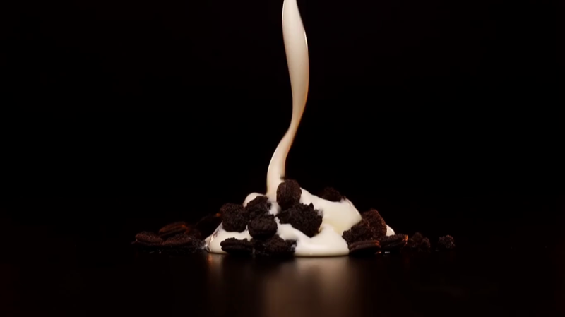

Where to find us
Wynwood, Miami
Sat — Sun, 12–6
Or by appointment.

A surface. Cold.
A pour.
A roll.
You watch the whole thing.
It's already done.
That's all a flavor is.
Three ways to work with us. Pick the one that fits.
Four flavors that change with the season. Real fruit. Small batch. Picked, rolled, and frozen the day you take them home.
See the menu →We supply the cold-plate system, the recipe, the brand. You supply the neighborhood. Royalty-based. No franchise fee up front.
Become a rep →Weddings, brand activations, corporate, birthdays. We show up, we set the plate, we roll. Miami-Dade and Broward. We travel.
Book the cart →Wynwood, Miami
Sat — Sun, 12–6
Or by appointment.
One text when there's something new. No marketing.
Tell us about the event, the date, and how many people. We'll get back within 24 hours.